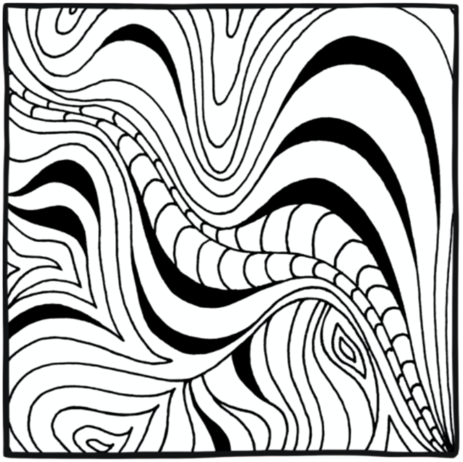
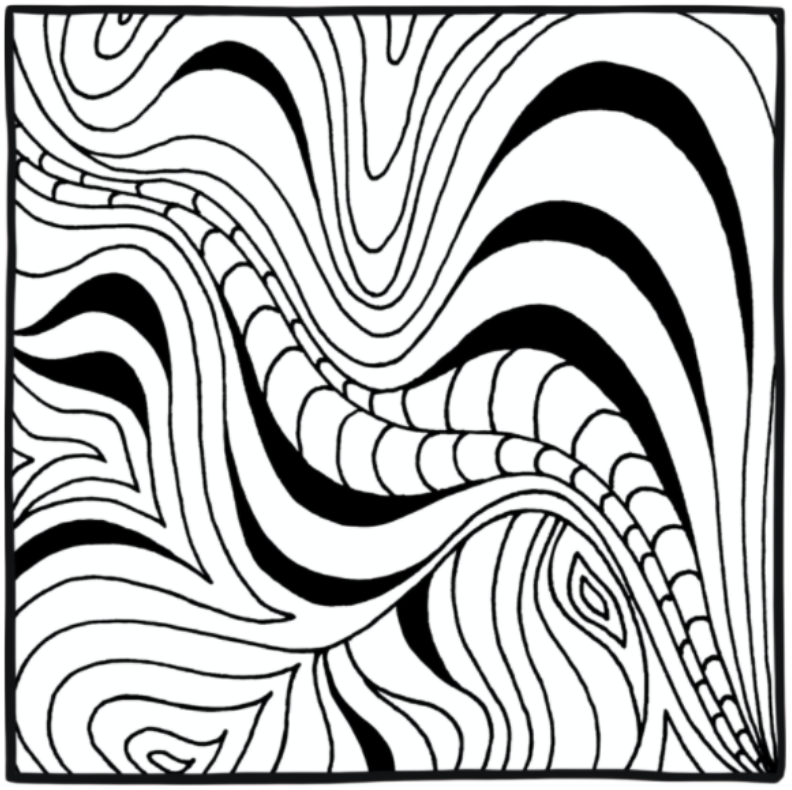

Here's some drawings I made using some Sharpies and my iPad. These were mostly for an art class that I took at the University of Michigan. Each piecehad a new focus every week, so some pieces have interesting topics, like the pineapple drawings. I used my iPad to draw some of it and sharpies to draw other pieces.


These three are drawings of objects in my surroundings. Each one was initially created with sharpie and then scanned on my iPad and improved on the Procreate app. I added in some color on the pineapple, inverted colors on the dice, and added different textures on the glass lens.


These three are drawings of more objects in my surroundings but each has more creativity. They each flow out to the end of the paper with a pattern.
 

These three are patterns I created from scratch. One features my nickname "Liv," and the other two are just different shapes turned into unique patterns. I had a lot of fun creating these.
Key Takeaways:
Each design either was drawn off the page or had a border to provide a certain effect. This class also helped me learn how to edit drawings with the Adobe Suite. I now know more graphic design concepts as a result of this class. I think this helps with Web Design.